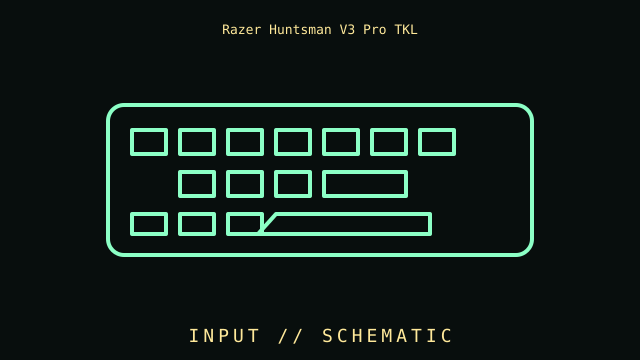

[ INDIVIDUAL COMPONENT // INPUT DEVICES ]
Razer Huntsman V3 Pro TKL
Wired TKL analog-optical keyboard with adjustable actuation, Rapid Trigger, and dial. This entry identifies this product generation and distinguishes important interface and revision differences.

MODEL IDENTIFICATION: Check the label for the complete model, revision, regional SKU, accessories, and current manufacturer documentation before installation.
Specifications
| Catalog subcategory | Keyboards and integrated pointing devices |
|---|---|
| Catalog identity | Razer Huntsman V3 Pro TKL |
| Era / family | Analog optical tenkeyless gaming keyboard, V3 Pro generation |
| Product-specific features | TKL layout with Gen-2 analog optical switches; adjustable actuation (0.1–4.0 mm) and Rapid Trigger; multifunction dial and media keys. |
| Interface | Wired USB-C. Advanced analog settings, Rapid Trigger, profiles, and firmware depend on Razer Synapse and firmware. |
| Compatibility guidance | Basic input uses USB; analog behavior requires compatible Razer software and game support. Check current Synapse/OS requirements for configuration features. |
| Variants and service note | Analog actuation does not imply analog-axis input in every game. Distinguish TKL from full-size V3 Pro and earlier Huntsman TKL models. |
Installation & compatibility checks
- Record the exact model/revision, interface mode, receiver or cable identity, firmware, driver version, and supported host before testing.
- Check connector, power, protocol, OS/driver, and application support separately; physical connector fit alone does not establish feature compatibility.
- For wireless models, preserve original receivers and pairing data. Test wired and radio modes independently where both are provided.
- Do not infer performance from manufacturer maximums alone; note settings, application, host, and measurement method for measured results.
Model notes
Analog actuation does not imply analog-axis input in every game. Distinguish TKL from full-size V3 Pro and earlier Huntsman TKL models.
Basic input uses USB; analog behavior requires compatible Razer software and game support. Check current Synapse/OS requirements for configuration features.
Sources & further reading
- Manufacturer — Razer Huntsman V3 Pro TKL product specificationsProduct reference; confirm exact variant and regional SKU.
- Manufacturer — Razer Huntsman V3 Pro TKL support and manualsSupport reference for drivers, manuals, and revision-specific guidance.
Manufacturer model references are authoritative for exact revisions and regional variants. Specifications can differ by package, firmware, region, and driver generation.